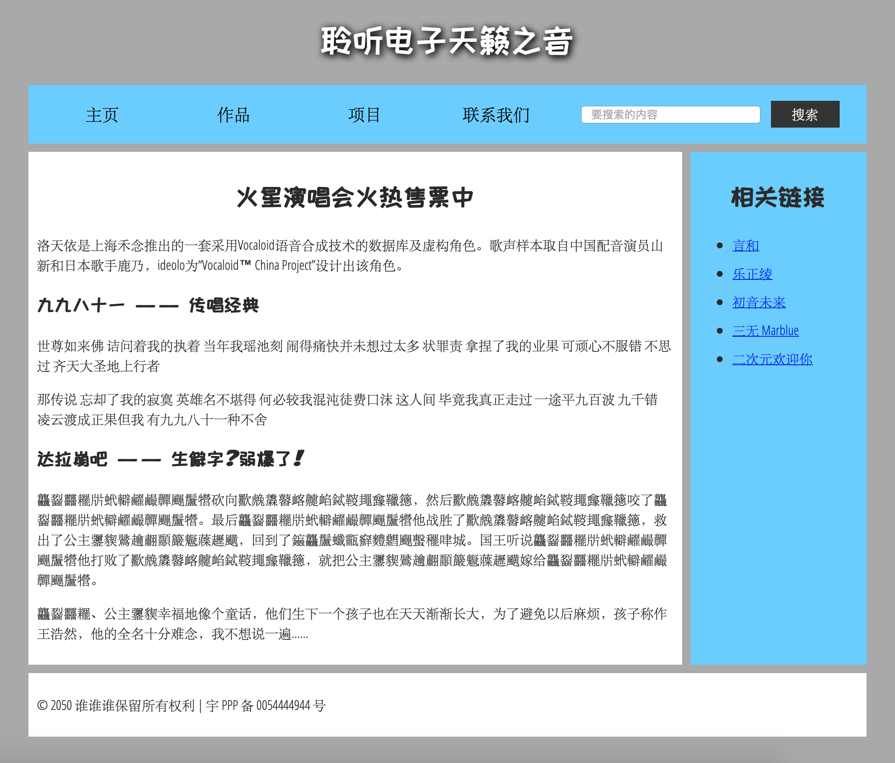
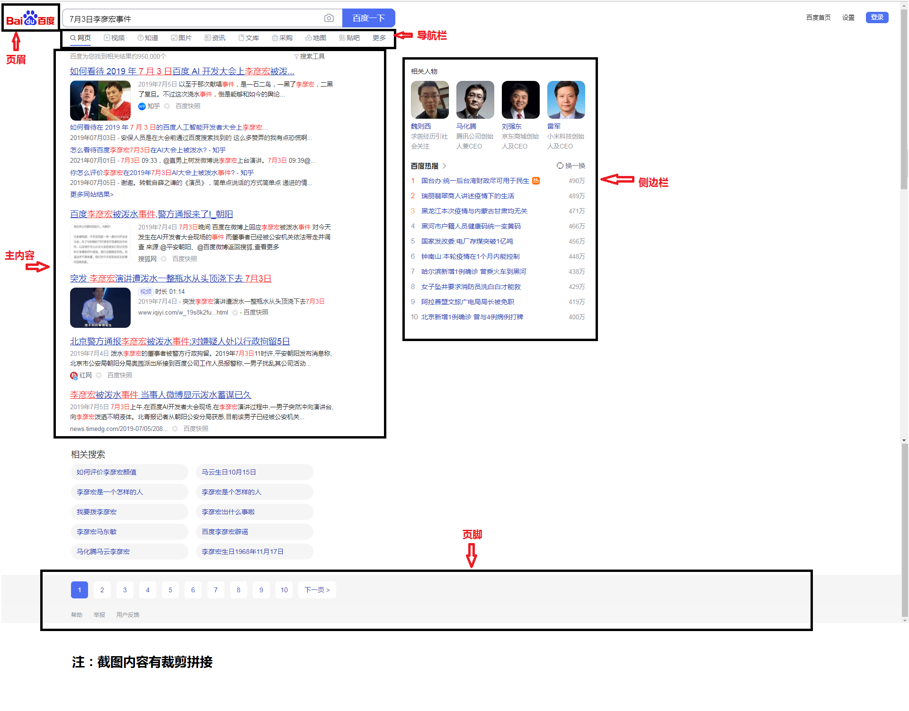

HTML：7——排版布局
本文按照 Mozilla 贡献者基于 CC-BY-SA 2.5 协议发布的以下文章改编:
现在我们已经学习了网页的很多元素了。那么下一步，我们就要开始做一个真正的网页。
网页的外观多种多样，但是除了全屏视频或游戏，或艺术作品页面，或只是结构不当的页面以外，都倾向于使用类似的标准组件：
页眉
通常横跨于整个页面顶部有一个大标题 和/或 一个标志。 这是网站的主要一般信息，通常存在于所有网页。
导航栏
指向网站各个主要区段的超链接。通常用菜单按钮、链接或标签页表示。类似于标题栏，导航栏通常应在所有网页之间保持一致，否则会让用户感到疑惑，甚至无所适从。许多 web 设计人员认为导航栏是标题栏的一部分，而不是独立的组件，但这并非绝对；还有人认为，两者独立可以提供更好的 无障碍访问特性，因为屏幕阅读器可以更清晰地分辨二者。
主内容
中心的大部分区域是当前网页大多数的独有内容，例如视频、文章、地图、新闻等。这些内容是网站的一部分，且会因页面而异。
侧边栏
一些外围信息、链接、引用、广告等。通常与主内容相关（例如一个新闻页面上，侧边栏可能包含作者信息或相关文章链接），还可能存在其他的重复元素，如辅助导航系统。
页脚
横跨页面底部的狭长区域。和标题一样，页脚是放置公共信息（比如版权声明或联系方式）的，一般使用较小字体，且通常为次要内容。 还可以通过提供快速访问链接来进行 SEO（搜索引擎优化）。
一个典型的网页可能是这样的：

不过大部分网页都有一些不同。比如说百度的搜索李彦宏泼水的结果页面。

当然要达到这样的效果肯定是需要CSS的。但是我们先写HTML。
首先介绍<div>。这个元素是一个块级元素，像是一个盒子，你可以往里面塞很多各种各样的元素。div里塞div也是可行的。
在HTML5之前，前端工程师们通常使用多个加了id或class的div元素来实现这些内容。然而在HTML5中有很多语义化的标签可以替代这些div：
<header>：页眉。<nav>：导航栏。<main>：主内容。主内容中还可以有各种子内容区段，可用<article>、<section> 和 <div> 等元素表示。<aside>：侧边栏，经常嵌套在 <main> 中。<footer>：页脚。
比如上面那个“典型的网页”，可以这么写（仅body部分内容）：
1 | <header> |
浏览上面的代码，可以看见：
1.HTML的内容确实可以换行写。比如那个input，还有注释都换行了。
2.一般来说，导航栏都使用无序列表实现。别看无序列表似乎和导航栏完全不像，CSS渲染之后就好了。
3.©——还记得实体引用吗？这也是。
4.注意那个id=”search-box”的div。其实拆开来也没什么关系，但是写div里更清楚一点，也方便写CSS。
至于input和button元素，我们以后讲——也许会讲吧。
好了，接下来我们可以真正地制作自己的网页了。